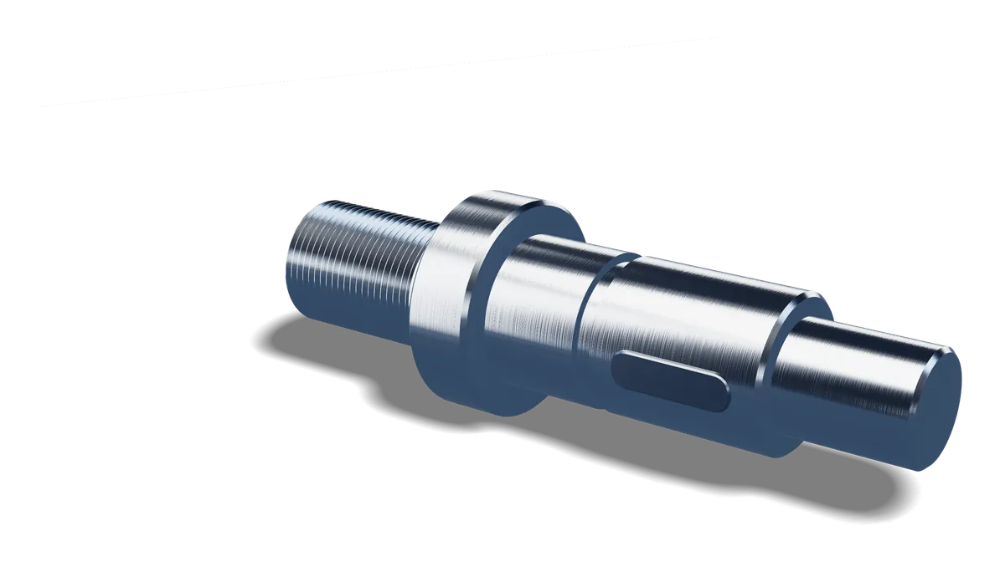
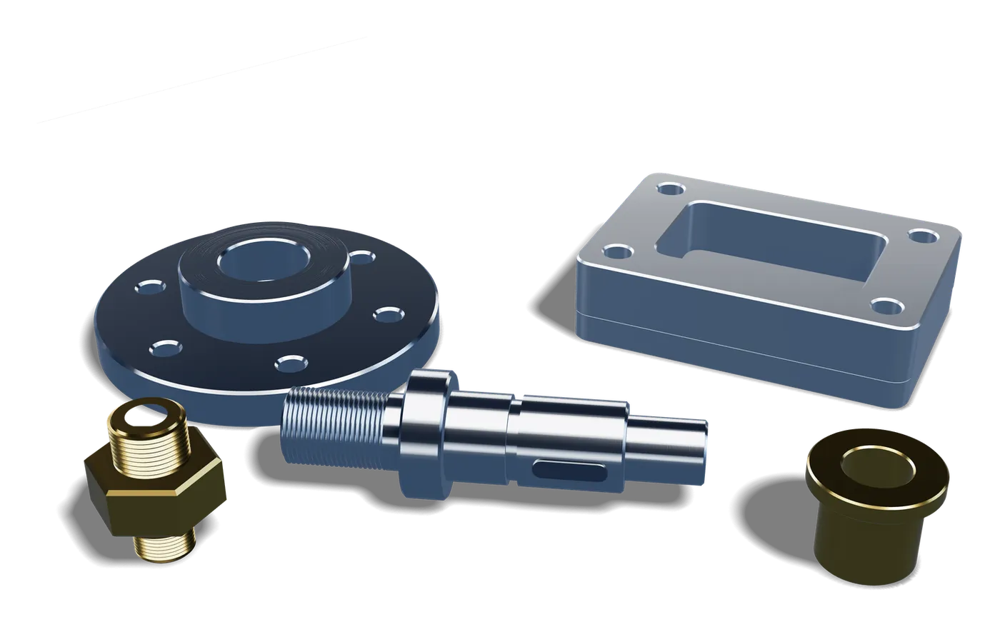
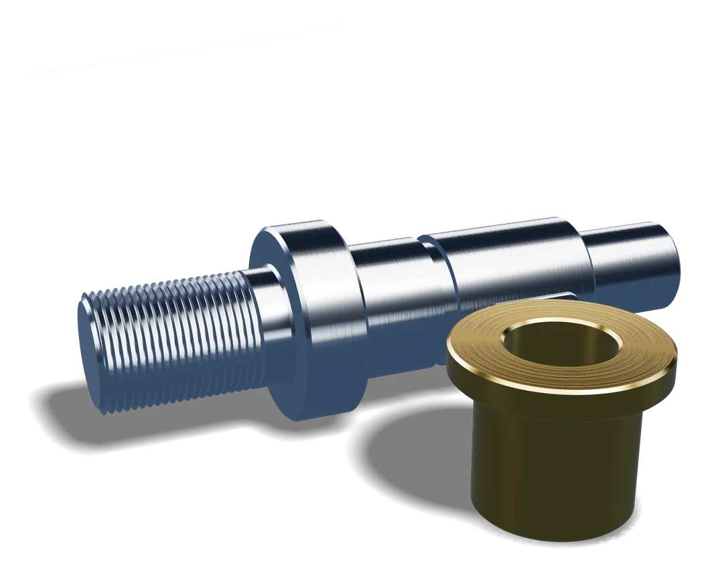
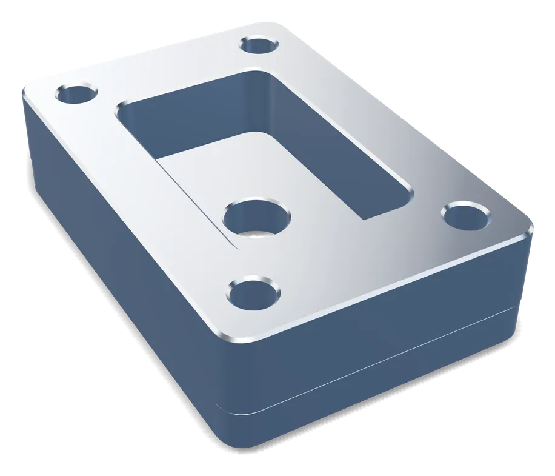
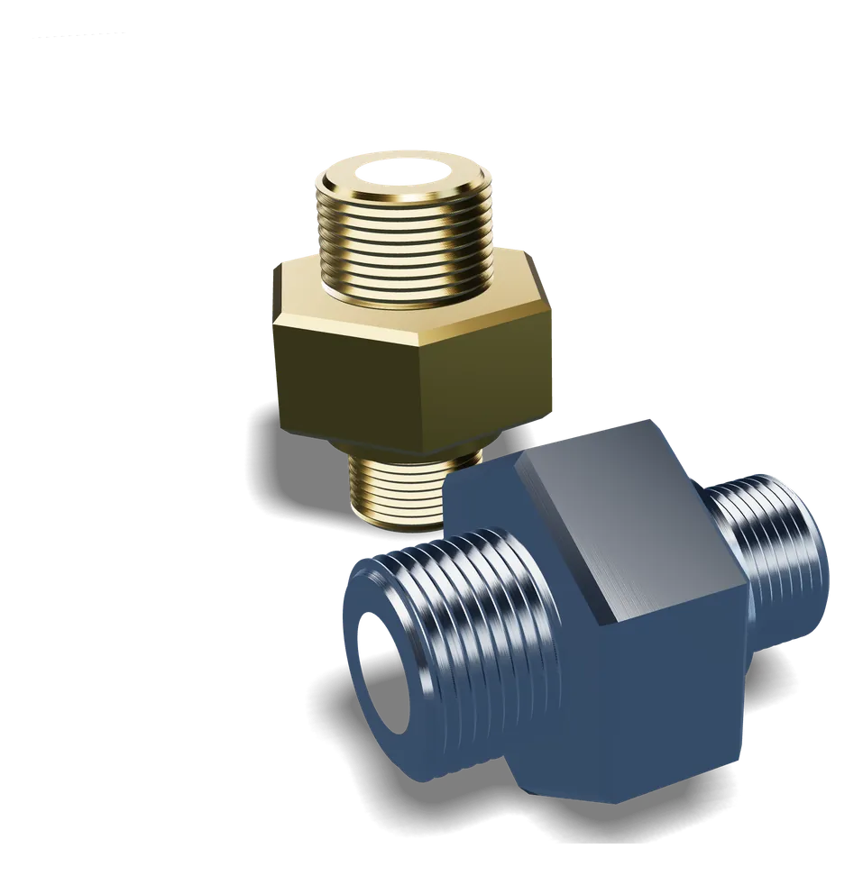

CNC-Drehen
Rotationssymmetrische Präzisionsteile wie Wellen, Bolzen, Buchsen, Flansche und Gewindeteile – maßhaltig, mit hoher Oberflächengüte und wiederholgenau.
Mehr zum CNC-Drehen – LeistungenCNC-Präzisionsteile aus Georgsmarienhütte
Präzisions- und Sonderteile nach Zeichnung – CNC-gedreht und CNC-gefräst, vom Prototyp bis zur Serie. Mit über 35 Jahren Erfahrung in der Metallbearbeitung.

WelleEdelstahl · CNC-gedreht
Ziehen zum Drehen · Antippen für Schwung
Über AY-Tech
Hinter AY-Tech steht Geschäftsführer Yüksel Açil – mit mehr als 35 Jahren Erfahrung in der Metall- und Präzisionsteilebranche. Dieses Wissen fließt in jedes Bauteil ein: von der Prüfung Ihrer Zeichnung über die Wahl der passenden Fertigungsstrategie bis zur maßgenauen Endkontrolle.
Wir verstehen uns als verlängerte Werkbank unserer Kunden: flexibel, termintreu und mit kurzen Wegen. Bei uns sprechen Sie mit Menschen, die Ihr Bauteil technisch verstehen.

Leistungen
Zwei Kernverfahren, ein Anspruch: maßhaltige Bauteile in der Qualität, die Ihre Anwendung verlangt.

Rotationssymmetrische Präzisionsteile wie Wellen, Bolzen, Buchsen, Flansche und Gewindeteile – maßhaltig, mit hoher Oberflächengüte und wiederholgenau.
Mehr zum CNC-Drehen – Leistungen
Taschen, Konturen, Nuten und präzise Bohrbilder: Gehäuse, Platten, Halter und Vorrichtungsteile – gefräst aus dem Vollen.
Mehr zum CNC-Fräsen – Leistungen
Individuelle Bauteile nach Zeichnung oder Muster, Ersatzteile und Prototypen – auch in kleinen Stückzahlen und bei kurzfristigem Bedarf.
Mehr zu Sonderteilen – LeistungenIhre Vorteile
Über 35 Jahre Branchenkenntnis der Geschäftsführung – für fertigungsgerechte Lösungen und belastbare Aussagen.
Enge Toleranzen und saubere Oberflächen sind für uns Standard – nicht die Ausnahme.
Vom Einzelteil über den Prototyp bis zur Serie – jeweils wirtschaftlich gefertigt.
Realistische Liefertermine, die wir einhalten – und offene Kommunikation, falls sich etwas ändert.
Ein fester Ansprechpartner und schnelle Entscheidungen – ohne Umwege über Callcenter oder Hierarchien.
Maßprüfung vor Auslieferung – auf Wunsch mit Messprotokoll zu Ihren Bauteilen.
Ablauf
Sie senden uns Zeichnung oder 3D-Modell mit Werkstoff, Stückzahl und Wunschtermin.
Wir prüfen die Machbarkeit, geben Hinweise zur Fertigung und erstellen ein verbindliches Angebot.
Ihre Teile entstehen auf unseren CNC-Dreh- und Fräsmaschinen – mit fertigungsbegleitender Kontrolle.
Nach der Endkontrolle erhalten Sie Ihre Teile sicher verpackt und termingerecht.
Branchen
Unsere Bauteile kommen überall dort zum Einsatz, wo Maßhaltigkeit und Zuverlässigkeit zählen.
Häufige Fragen
Antworten auf typische Fragen von Einkäufern und Konstrukteuren.
Ihre Frage ist nicht dabei? Rufen Sie uns an unter +49 5401 000000 oder schreiben Sie uns.
Ja. Wir fertigen vom Einzelteil über Prototypen und Kleinserien bis zur Serie. Gerade bei Sonder- und Ersatzteilen sind kleine Stückzahlen für uns Alltag.
Am besten eine technische Zeichnung als PDF und – falls vorhanden – ein 3D-Modell, z. B. im STEP-Format. Dazu Werkstoff, Stückzahl und Wunschtermin. Fehlt etwas, fragen wir einfach nach.
Nach Absprache ja. Wir nehmen die Maße am Musterteil auf und stimmen kritische Maße und Toleranzen vor der Fertigung mit Ihnen ab.
Unter anderem Bau-, Automaten- und Vergütungsstahl, Edelstahl, Aluminium, Messing, Kupfer, Bronze sowie technische Kunststoffe. Zur Werkstoffübersicht
In der Regel innerhalb von ein bis zwei Werktagen. Bei dringenden Anfragen rufen Sie uns am besten direkt an.
Selbstverständlich. Ihre Unterlagen nutzen wir ausschließlich für Angebot und Fertigung und geben sie nicht an Dritte weiter. Auf Wunsch unterzeichnen wir eine Geheimhaltungsvereinbarung.
Ja, wir liefern deutschlandweit. In der Region Osnabrück ist auf Wunsch auch eine eigene Zustellung möglich.
Schnellanfrage
Beschreiben Sie kurz Ihr Bauteil. Wir prüfen die Machbarkeit und melden uns mit einem konkreten Angebot.
Lieber persönlich? +49 5401 000000